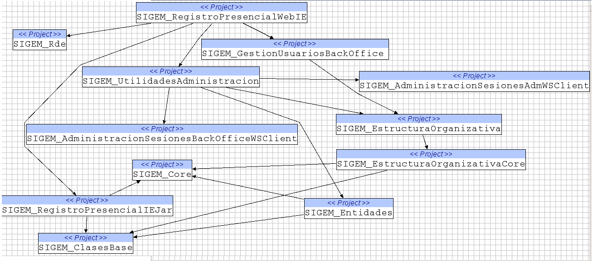
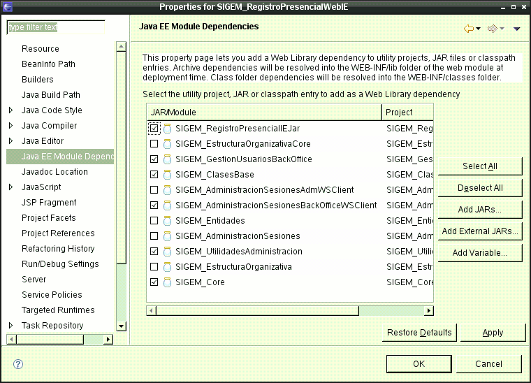
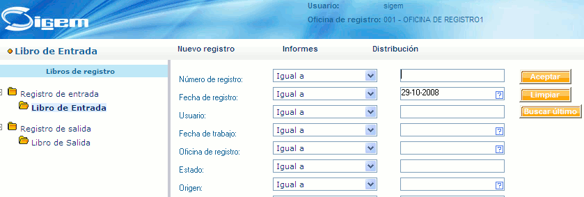

Componentes web: el registro presencial
En esta sesión vamos a analizar una de las aplicaciones web que componen SIGEM: el registro presencial. Lo ejecutaremos desde Eclipse, lo que nos permitirá modificar y depurar el código.
Preparación del workspace y prueba de la aplicación
Como ya se ha visto en la sesión anterior, SIGEM está dividido en un gran número de proyectos de Eclipse con diversas dependencias entre sí. Ya se vio en esta sesión cómo ir importando proyectos a Eclipse y arreglando las dependencias. Para simplificar el trabajo de hoy, se dispone de un workspace ya configurado. No obstante, también vamos a dar las guías generales para ir resolviendo las dependencias una a una.
Para empezar a trabajar con el registro presencial, descomprimir el workspace en cualquier carpeta. Generará una carpeta llamada workspaceRegistro. Bastará con elegir esta carpeta como workspace de Eclipse al arrancar el programa.
En el workspace están contenidos los proyectos que componen el registro así como configurado el servidor web. Para probar la aplicación de registro habrá que seguir estos pasos:
- Arrancar la base de datos postgres
> su postgres > pg_ctl start -D /usr/local/pgsql/data
- Arrancar el servidor web. En él deben aparecer tres proyectos: SIGEM_RegistroPresencialWebIE
SIGEM_AutenticacionBackOfficeWeb y SIGEM_AdministracionSesionesBackOfficeWS.
Más adelante explicaremos qué hace cada uno de ellos.
Es posible que el servidor web no consiga arrancar en el tiempo máximo que tiene asignado por defecto en Eclipse (45 segundos). Si esta situación se da de manera repetida, podemos probar a aumentar este tiempo.
Para ello, en la vista Servers, hacer doble clic sobre el nombre del servidor. Aparecerá un formulario mediante el que podemos editar su configuración. En la parte superior derecha del mismo, hay una solapa llamada timeouts que contiene la opción que buscamos. Incrementaremos el tiempo que Eclipse espera al servidor.
- La aplicación solo funciona con Internet Explorer, por lo que la prueba habrá que
hacerla desde fuera de la máquina virtual.
- Averiguar la IP que tiene nuestra máquina virtual mediante ifconfig. Habrá que ejecutar la orden como root
- En windows, abrir el Explorer y acceder a la URL
http://IP_DE_LA_VM:8080/SIGEM_RegistroPresencialWeb
- Debe aparecer la pantalla en la que SIGEM nos solicita usuario y contraseña. Introducir sigem en los dos campos.
- Ahora debe aparecer la pantalla inicial del registro presencial, desde la que podemos entrar en los libros de entrada y salida que tengamos dados de alta.
Organización general del código
Antes de hacer modificaciones sobre el código del registro, vamos a ver cómo está organizado
Dependencias entre módulos
Como ya se vio en la sesión anterior, un proyecto de Eclipse puede contener referencias a los proyectos de los que depende, y SIGEM usa esta característica de manera extensiva. A modo de ejemplo, el siguiente gráfico muestra las dependencias entre los proyectos que componen el registro presencial:

El gráfico anterior se ha obtenido gracias a un plugin de eclipse denominado Eclipse Project Dependencies Viewer. En el sitio web tenéis las instrucciones de instalación. Una vez instalado, simplemente hay que pulsar con el botón derecho sobre el proyecto que deseemos y elegir la opción de Show top-down project references para ver las dependencias de un proyecto en forma gráfica.
Nótese que las dependencias anteriores son simplemente dependencias estáticas. Es decir, las necesarias para que el código compile. En una aplicación distribuida como SIGEM puede haber dependencias entre proyectos web que no se detectarán hasta tiempo de ejecución. Por ejemplo, en el grafo anterior no aparece el proyecto SIGEM_AutenticacionBackOfficeWeb, que sin embargo es necesario para ejecutar el registro. Aunque no se incluyen gráficos con las dependencias estáticas de los otros proyectos web, son fáciles de obtener con el plugin de Eclipse ya mencionado.
Proyectos web que dependen de proyectos java
Como se ha visto en los módulos de servidores y de componentes web, las librerías que necesita una aplicación web deben colocarse dentro de WEB-INF/lib. Cuando son librerías "de terceros" basta con colocar el JAR en el directorio, pero cuando el proyecto web depende de otros proyectos es necesario configurarlo en Eclipse. Esto se hace a través de la opción Java EE Module dependencies que aparece en la ventana de propiedades del proyecto (botón derecho sobre el mismo > Properties)

Al activar estas opciones, Eclipse empaquetará en JARs el código de los proyectos de los que dependa nuestro proyecto web y los meterá en WEB-INF/lib.
Módulos web
Como se ha visto al poner en marcha el servidor, el registro requiere de la puesta en marcha de tres módulos web:
- SIGEM_RegistroPresencialWebIE: es el registro presencial propiamente dicho.
- SIGEM_AutenticacionBackOfficeWeb: es el módulo que se encarga de la autenticación de los usuarios. Al hacer login en SIGEM se genera un "identificador de sesión" para el usuario cuya existencia se chequea en todas las aplicaciones de SIGEM.
- SIGEM_AdministracionSesionesBackOfficeWS: es el servicio web de autenticación, en el que se apoya el módulo anterior.
Como se vio en el módulo de servidores, un elemento fundamental en una aplicación web es la configuración del servidor. Vimos que hay dos sitios donde se suelen configurar las aplicaciones web en Tomcat: el server.xml, global a todas las aplicaciones, y los context.xml propios de cada aplicación.
Si examináis el server.xml, veréis que el incluido en la máquina virtual incluye diversas fuentes de datos, necesarias para las aplicaciones de SIGEM. Dichas fuentes de datos se definen como recursos JNDI globales (es decir, accesibles por todas las aplicaciones). Por ejemplo, a partir de la línea 81 se define un DataSource para el registro
<!-- DATASOURCE SIGEM REGISTRO-->
<Resource auth="Container" name="jdbc/registroDS_000" type="javax.sql.DataSource"/>
<ResourceParams name="jdbc/registroDS_000">
<parameter>
<name>username</name>
<value>postgres</value>
</parameter>
<parameter>
<name>password</name>
<value>postgres</value>
</parameter>
<parameter>
<name>driverClassName</name>
<value>org.postgresql.Driver</value>
</parameter>
<parameter>
<name>url</name>
<value>jdbc:postgresql://localhost/registro_000</value>
</parameter>
<parameter>
<name>maxActive</name>
<value>20</value>
</parameter>
<parameter>
<name>maxIdle</name>
<value>10</value>
</parameter>
<parameter>
<name>removeAbandoned</name>
<value>true</value>
</parameter>
<parameter>
<name>removeAbandonedTimeout</name>
<value>5</value>
</parameter>
</ResourceParams>
Cuando se definen los recursos JNDI como globales, es necesario referenciarlos de nuevo en el context.xml propio de la aplicación. Esto se hace a través de la etiqueta XML <ResourceLink>. Curiosamente, en los módulos de SIGEM no se usa esta etiqueta sino que se vuelve a definir el recurso. En realidad sobraría una de las dos definiciones (local o global).
Flujo de ejecución. Logs HTTP
Cuando trabajamos con proyectos sencillos, se puede seguir el flujo de ejecución ejecutando el código en modo depuración. El problema de hacerlo así con SIGEM es que el flujo se mueve entre muchos proyectos y entre varios módulos web. Para hacerse una idea de la secuencia general de llamadas, en estos casos puede resultar más útil crear un log de las peticiones HTTP al servidor. Ya vimos en el módulo de servidores cómo configurar Tomcat para generar este tipo de logs. Basta con crear un Valve al nivel deseado, ya sea para todo el host o solamente para una aplicación.
Como inicialmente no sabemos el orden de las llamadas entre módulos, vamos a crear un log para todo el servidor. En el server.xml, debajo de la definición del host, introduciremos el siguiente código:
<Host appBase="webapps" autoDeploy="true" debug="0" name="localhost"...
<Valve className="org.apache.catalina.valves.AccessLogValve"
directory="logs" pattern="common"
prefix="mod_registro_log." resolveHosts="false"
suffix=".txt"/>
Probad ahora a acceder al registro desde Explorer y examinad el log con las peticiones HTTP realizadas. Es importante sobre todo la parte inicial de la URL, que nos indica la aplicación web que se está ejecutando. También serán ilustrativas las llamadas a los servlets y a los JSP. Estas últimas son más fácilmente identificables, ya que suelen tener como es lógico extensión .jsp. Para los servlets no suele haber una extensión determinada.
Si nos interesa restringir el log a una sola aplicación, colocaremos el Valve dentro del context.xml de la misma.
Un problema de estos logs es que cuando se realiza una petición de tipo POST no se muestran los parámetros. Hay otro Valve en Tomcat que muestra toda la información disponible sobre la petición HTTP, llamado request dumper valve. Simplemente habría que introducir al nivel adecuado (host o aplicación) lo siguiente:
<Valve className="org.apache.catalina.valves.RequestDumperValve"/>
La capa web del módulo de registro
Los diferentes módulos de SIGEM usan tecnologías diversas. En concreto, la capa web del módulo de registro presencial es una aplicación web convencional JavaEE, basada por tanto en servlets y JSPs. También usa algo de Struts, aunque esto lo dejaremos hasta la sesión de integración correspondiente.
Para empezar a analizar una aplicación web, el primer sitio en el que "hay que mirar" es el archivo web.xml. El del módulo de registro contiene básicamente:
- La definición de __index.jsp como página inicial. Si examinamos el código de esta página, veremos que se limita a leer el locale del navegador y a saltar a default.jsp.
- La definición de un filtro (clase LoginCheckFilter), asociado a todas las URL del módulo, que chequeará si estamos logueados o no.
- La definición y el mapeo de los servlets que componen la capa web.
Como ejemplo, vamos a ver el servlet que se encarga de realizar búsquedas en el registro. Para encontrarlo, en la pantalla de uno de los libros de registro realizaremos una búsqueda por ejemplo de la última entrada (botón "Buscar último").

En el log HTTP debería quedar constancia de los servlets/JSP que se han solicitado. Si lo examinamos veremos en las últimas líneas algo como
..."POST /SIGEM_RegistroPresencialWeb/tbltext.jsp?SessionPId=CDEC... ..."GET /SIGEM_RegistroPresencialWeb/scripts/tbltext.js HTTP/1.1" 304 - ..."GET /SIGEM_RegistroPresencialWeb/images/docemp.gif HTTP/1.1" ...
donde se han eliminado ciertos datos del log para que el registro quepa en una sola línea. Obsérvese que el que parece "hacer el trabajo" es el JSP tbltext.jsp. No obstante, si vamos al web.xml veremos que dicha URL está mapeada en realidad con un servlet de la clase TblText
Mediante un examen cuidadoso del código de dicha clase podemos ver que es un servlet convencional (es decir, es una clase que hereda de HttpServlet) y más o menos deducir cómo hace el trabajo
public class TblText extends HttpServlet implements Keys {
...
public void init() throws ServletException {
super.init();
factory = TransformerFactory.newInstance();
bookUseCase = new BookUseCase();
}
protected void doGet(HttpServletRequest request, HttpServletResponse response)
throws ServletException, IOException {
doWork(request, response);
}
protected void doPost(HttpServletRequest request, HttpServletResponse response)
throws ServletException,IOException {
doWork(request, response);
}
private void doWork(HttpServletRequest request, HttpServletResponse response)
throws ServletException, IOException {
//OBTENER PARAMETROS de la operación (están en petición y sesión)
// Identificador de la consulta.
Integer fdrQryPId = RequestUtils.parseRequestParameterAsInteger(request, "FdrQryPId");
// Tipo de consulta: Aceptar(TypeSearch=0), BuscarUltimo(TypeSearch=1).
Integer typeSearch = RequestUtils.parseRequestParameterAsInteger(request,
"TypeSearch", new Integer(0));
// Obtenemos la sesión asociada al usuario.
HttpSession session = request.getSession();
// Obtenemos el objeto de configuración del servidor de aplicaciones y el identificador
// de sesión para este usuario en el servidor de aplicaciones.
UseCaseConf useCaseConf = (UseCaseConf) session.getAttribute(J_USECASECONF);
// Recuperamos el id de libro
Integer bookID = (Integer) session.getAttribute(Keys.J_BOOK);
// Texto del idioma. Ej: EU_
String idioma = (String) session.getAttribute(Keys.J_IDIOMA);
// Número del idioma. Ej: 10
Long numIdioma = (Long) session.getAttribute(Keys.J_NUM_IDIOMA);
PrintWriter writer = response.getWriter ();
//LOGICA DE NEGOCIO
try {
Document xmlDocument = null;
List badCtrls = null;
if (typeSearch.equals(Keys.SEARCH_WITH_FILTER)) {
badCtrls = bookUseCase.validateQueryParams(useCaseConf, bookID, request);
...
} else {
xmlDocument = bookUseCase.getLastRegisterForUser(useCaseConf, bookID);
}
//DEVOLVER EL RESULTADO
if (xmlDocument != null) {
// Transformamos el xml mediante la xsl en html.
// Los errores pueden ser de comunicación, de validación,etc...
String xslPath = session.getServletContext().
getRealPath(XSL_TBLTEXT_RELATIVE_PATH);
...
}
Podemos resumir el servlet en algunos puntos interesantes:
- La secuencia de operaciones es la típica en un servlet: obtener y validar los parámetros, disparar la lógica de negocio y devolver el resultado.
- La lógica de negocio para este caso de uso se implementa en la clase BookUseCase, que parece ocuparse de todo lo relacionado con los libros de registro.
- Los resultados del registro se obtienen en formato XML. Se ha optado por usar una hoja de estilo XSL para transformarlo en HTML y enviarlo directamente al navegador. Esta forma de trabajar es la que más complica el código de generación de la respuesta.
Ejemplo de refactorización
El que el servlet sea el responsable de generar directamente la respuesta HTML es sobre todo lo que acaba alargando más el código. Por ejemplo, nótese en la línea 113 el código empleado para generar una respuesta HTML cuando hay algún error en un campo. En este caso,hay que generar HTML con Javascript incrustado que muestre el/los campos erróneos. Probar por ejemplo a meter una fecha no válida en el campo "Fecha de registro".
Dicho código se podría sacar del servlet si se hiciera una redirección a un JSP externo, donde el HTML y Javascript serían más fáciles de localizar, editar y mantener. Vamos a hacer dicha tarea.
Analizando cuidadosamente el flujo de ejecución del servlet podemos observar que cuando hay algún campo de búsqueda erróneo se producen dos efectos:
- A partir de la línea 113 se genera el bloque principal de HTML y javascript:
writer.write("<HTML><HEAD><SCRIPT LANGUAGE=JavaScript>top.ShowQuery(); top.Main.Workspace.Query.ClearAllInvalids();"); for (Iterator it = badCtrls.iterator(); it.hasNext();) { writer.write("top.Main.Workspace.Query.SetBadField(\"" + it.next().toString() + "\");"); } writer.write("</SCRIPT></HEAD><BODY tabIndex=-1><LINK REL=\"stylesheet\" TYPE=\"text/css\" HREF=\"css/global.css\"/>\")</BODY></HTML>"); - De la 144 a la 147, se escribe el código javascript que muestra el error, usando
un par de métodos Java auxiliares:
} else if (badCtrls != null && !badCtrls.isEmpty()) { ResponseUtils.generateJavaScriptLog(writer, RBUtil.getInstance(useCaseConf.getLocale()) .getProperty(Keys.I18N_ISICRESSRV_QRY_ABORT_CAUSE_INVALID_TEXT)); writer.write(ACTIVATE_SEVERAL);
Podemos sustituir el código anterior por un código que guarde los errores concretos como atributos de la petición y pase el control al JSP, que será el encargado de mostrarlos. El simple cambio en este servlet no nos va a dar demasiados beneficios por sí solo, pero esta filosofía, repetida, nos lleva a simplificar la capa web y reutilizar código, que incrustado en el servlet no es posible volver a usar.
El código de la línea 113 quedaría:
request.setAttribute("badCtrls", badCtrls);
Es decir, lo único que necesitamos es pasarle al JSP la información de los campos con datos erróneos. Desde allí es desde donde generaremos el javascript para mostrar los errores.
Nos quedaría modificar la segunda parte (líneas 144 a 147)
request.setAttribute("problema", RBUtil.getInstance(useCaseConf.getLocale())
.getProperty(Keys.I18N_ISICRESSRV_QRY_ABORT_CAUSE_INVALID_TEXT));
RequestDispatcher rd = getServletContext().getRequestDispatcher("/errorBusqueda.jsp");
rd.forward(request, response);
donde guardamos el mensaje con el problema que se ha producido en el atributo de petición "problema" y pasamos el control al JSP. Nótese que la complejidad de código se debe sobre todo a la internacionalización. Sería más sencillo buscar directamente desde el JSP el mensaje con etiquetas que soporten internacionalización (JSTL, por ejemplo). Eso sí, requeriría cambios más laboriosos de hacer que en esta pequeña prueba.
Finalmente, el JSP "errorBusqueda.jsp" quedaría:
<%@ page import="java.util.List, java.util.Iterator"%>
<%
List badCtrls = (List) request.getAttribute("badCtrls");
%>
<HTML>
<HEAD>
<SCRIPT LANGUAGE=JavaScript>
top.ShowQuery(); top.Main.Workspace.Query.ClearAllInvalids();
<%
Iterator it;
for (it = badCtrls.iterator(); it.hasNext();) {
out.println("top.Main.Workspace.Query.SetBadField(\"" + it.next().toString() + "\");");
}
%>
</SCRIPT>
</HEAD>
<BODY tabIndex=-1>
<LINK REL="stylesheet" TYPE="text/css" HREF="css/global.css"/>")
</BODY>
</HTML>
<script>alert('<%= request.getAttribute("problema")%>');</script>
<script language=javascript>top.g_TreeFunc=true;
top.Main.Workspace.ToolBarQry.EnabledTool();</script>
Nótese que esta solución no es para reducir líneas de código (de hecho han aumentado ligeramente), sino para mejorar la organización y mantenibilidad. Ahora el JSP se puede probar de manera independiente al servlet, y el javascript ya no está "escondido" dentro del Java.
Ejercicios propuestos
Se proponen las siguientes pruebas con el objeto de familiarizarse con el código del registro y probar posibles cambios:
- Averiguar cuál es el servlet o JSP que obtiene el árbol con los libros de registro disponibles, que aparece nada más entrar al módulo. Observar en qué clases y métodos de la capa de negocio se apoya.
- Modificar la transformación XSL que se aplica en la mayoría de servlets de registro para generar el HTML. Sería más sencillo aplicarla directamente en un JSP usando etiquetas JSTL, en lugar de tener que hacerlo por código.
Apéndice: algunas herramientas útiles
Como la versión del código fuente y la de la máquina virtual no son exactamente la misma, puede ser interesante en algunos casos descompilar los fuentes de la máquina virtual para observar posibles diferencias. Afortunadamente en Java es posible descompilar los .class obteniendo el código fuente original (salvo comentarios, por supuesto) a menos que se emplee alguna tecnología de "ofuscación de código", lo que no es el caso de SIGEM.
Aunque hay muchas herramientas de este tipo, dos os pueden resultar especialmente útiles:
- JAD: descompilador de java disponible en múltiples plataformas. Sencillo (un único ejecutable) y ocupa poco espacio.
- JAR browser, herramienta para buscar clases dentro de ficheros .JAR. Nos evita tener que descomprimir los archivos y hacer las búsquedas manualmente. Además, al hacer doble clic sobre una clase llama al "jad" automáticamente si está instalado